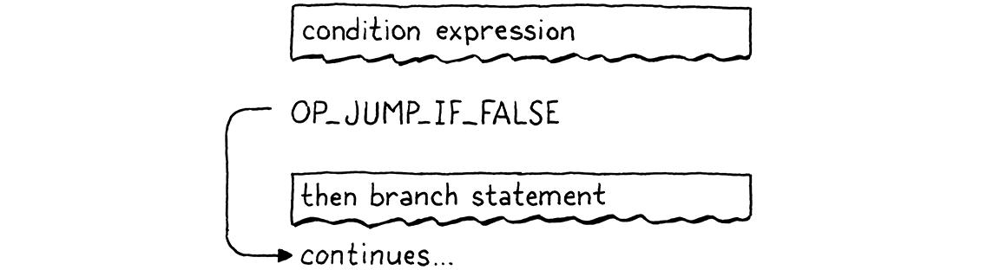
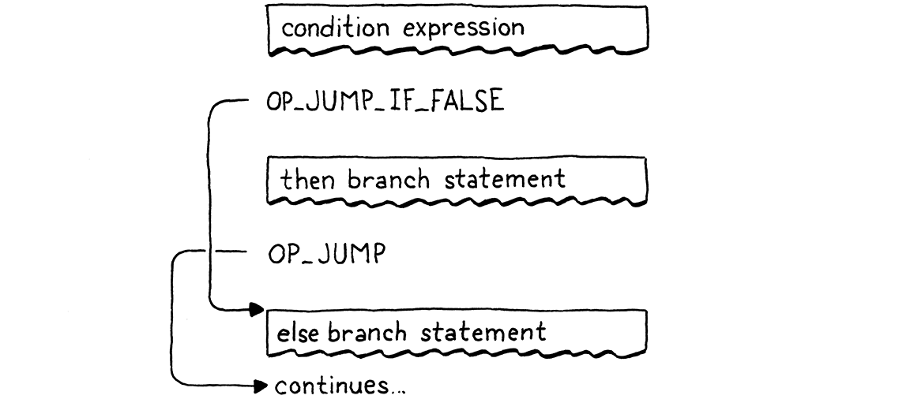
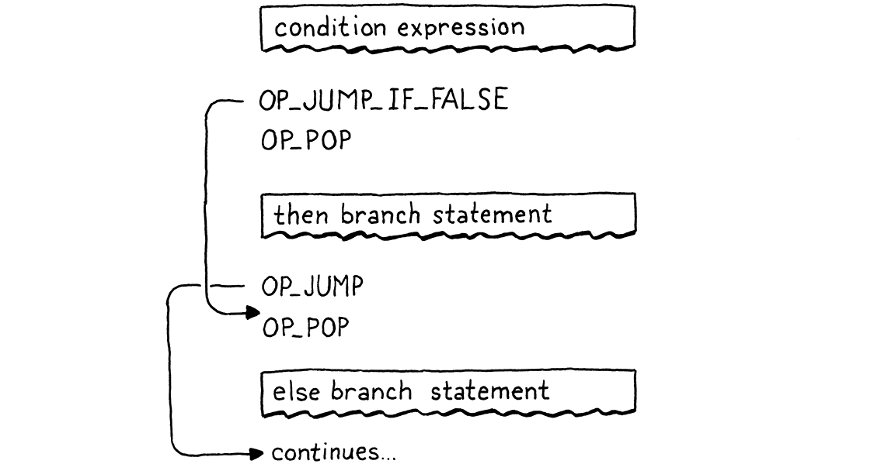
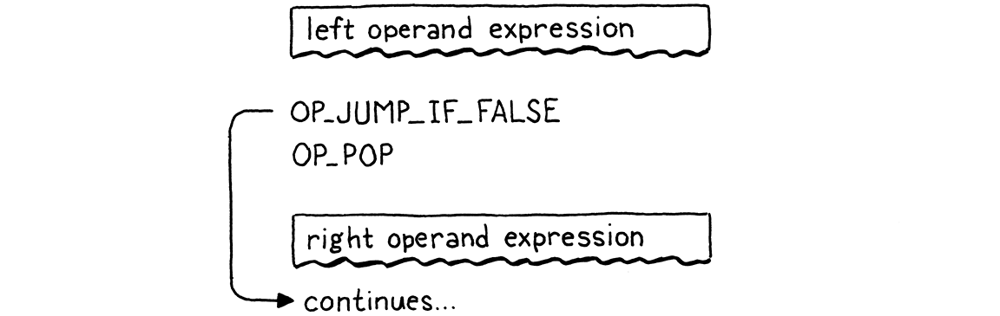
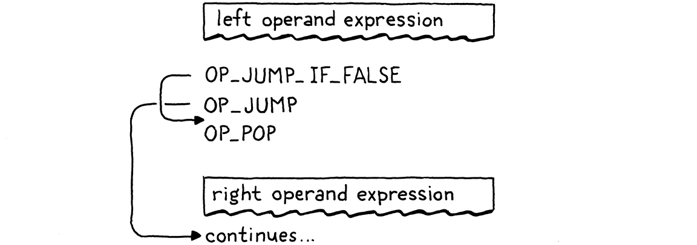
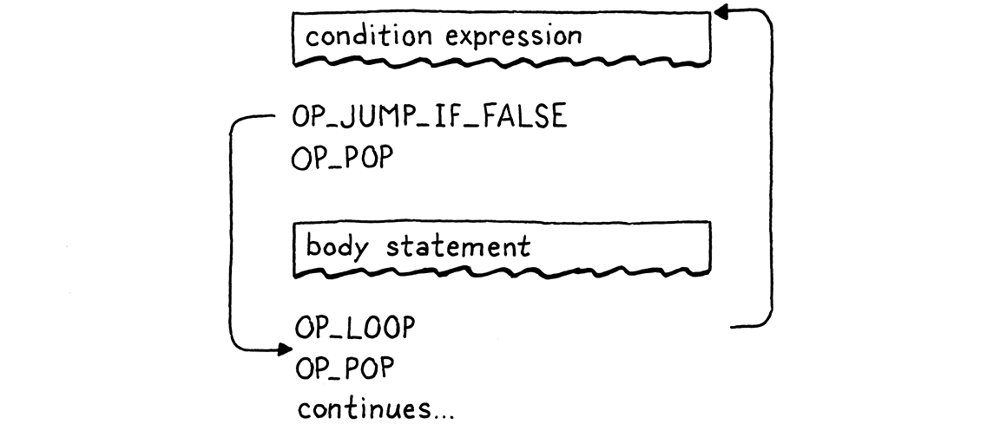
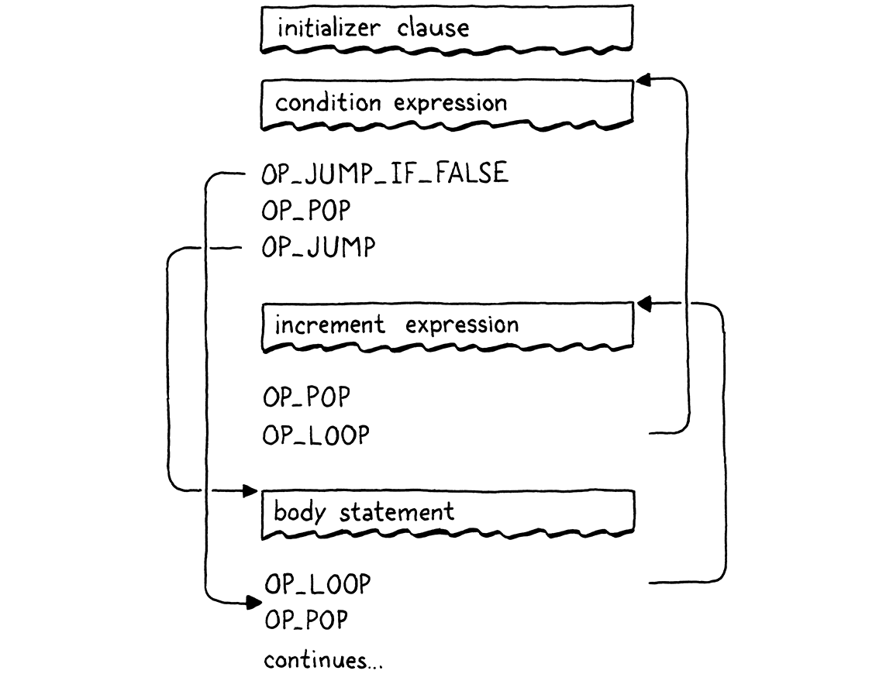

Jumping Back and Forth
This book is a work in progress!
×If you see a mistake, find something unclear, or have a suggestion, please let me know. To follow its progress, please join the mailing list:
(I post about once a month. Don’t worry, I won’t spam you.)
The order that our mind imagines is like a net, or like a ladder, built to attain something. But afterward you must throw the ladder away, because you discover that, even if it was useful, it was meaningless.
Umberto Eco, The Name of the Rose
It’s taken a while to get here, but we’re finally ready to add control flow to our virtual machine. In the tree-walk interpreter we built for jlox, we implemented Lox’s control flow in terms of Java’s. To execute a Lox if statement, we used a Java if statement to run the chosen branch. That works, but isn’t entirely satisfying. By what magic does the JVM or a native CPU implement if statements? Now that we have our own bytecode VM to hack on, we can answer that.
When we talk about “control flow”, what are we referring to? By “flow” we mean the way execution moves through the text of the program. Almost like there is a little robot inside the computer wandering through our program, executing each piece of code. Flow is the path that robot takes, and by controlling it, we drive which pieces of code it executes.
In jlox, the robot’s locus of attention—the current bit of code—was
implicit based on which AST nodes were stored in various Java variables and what
Java code we were in the middle of running. In clox, it is much more explicit.
The VM’s ip field stores the address of the current bytecode instruction. The
value of that field is exactly “where we are” in the program.
Execution proceeds normally by incrementing the ip. But we can mutate that
value however we want to. So in order to implement control flow, all that’s
necessary is to change the ip in more interesting ways. The simplest control
flow construct is an if statement with no else clause:
if (condition) print("condition was truthy");
The VM evaluates the bytecode for the condition expression. If the result is truthy, then it continues along and executes the print statement in the body. The interesting case is when the condition is falsey. When that happens, execution skips over the then branch and proceeds to the next statement.
To skip over a chunk of code, we simply set the ip field to the address of the
bytecode instruction following that code. To conditionally skip over some
code, we need an instruction that looks at the value on top of the stack. If
it’s falsey, it adds a given offset to the ip to jump over a range of
instructions. Otherwise, it does nothing and lets execution proceed to the next
instruction as usual.
When we compile to bytecode, the explicit nested block structure of the code evaporates, leaving only a flat series of instructions behind. Lox is a structured programming language, but clox bytecode isn’t. The right—or wrong depending on how you look at it—set of bytecode instructions could jump into the middle of a block, or from one scope into another.
The VM will happily execute that, even if the result leaves the stack in an unknown, inconsistent state. So even though the bytecode is unstructured, we’ll take care to ensure that our compiler only generates clean code that maintains the same structure and nesting that Lox itself does.
This is exactly how real CPUs behave. Even though we might program them using higher-level languages that mandate structured control flow, the compiler lowers that down to raw jumps. At the bottom, it turns out goto is the only real control flow.
Anyway, I didn’t mean to get all philosophical. The important bit is that if we
have that one conditional jump instruction, that’s enough to implement Lox’s if
statement, as long as it doesn’t have an else clause. So let’s go ahead and
get started with that.
23 . 1If Statements
This many chapters in, you know the drill. Any new feature starts in the front end and works its way through the pipeline. If statements are, well, statements, so that’s where we hook them into the parser:
if (match(TOKEN_PRINT)) {
printStatement();
in statement()
} else if (match(TOKEN_IF)) { ifStatement();
} else if (match(TOKEN_LEFT_BRACE)) {
When we see an if keyword, we hand off compilation to this function:
add after expressionStatement()
static void ifStatement() { consume(TOKEN_LEFT_PAREN, "Expect '(' after 'if'."); expression(); consume(TOKEN_RIGHT_PAREN, "Expect ')' after condition."); int thenJump = emitJump(OP_JUMP_IF_FALSE); statement(); patchJump(thenJump); }
First we compile the condition expression, bracketed by parentheses. At runtime, that will leave the condition value on top of the stack. We’ll use that to determine whether to execute the then branch or skip it.
Then we emit a new OP_JUMP_IF_FALSE instruction. It has an operand for how
much to offset the ip—how many bytes of code to skip. If the condition is
falsey, it adjusts the ip by that amount. Something like this:

But we have a problem. When we’re writing the OP_JUMP_IF_FALSE instruction’s
operand, how do we know how far to jump? We haven’t compiled the then branch
yet, so we don’t know how much bytecode it contains.
To fix that, we use a classic trick called backpatching. We emit the jump instruction first with a placeholder offset. We keep track of where that temporary instruction is. Next, we compile the then body. Once that’s done, we know how far to jump. So we go back and replace that placeholder offset with the real one now that we can calculate it. Sort of like sewing a patch onto the existing fabric of the compiled code.

We encode this trick into two helper functions:
add after emitBytes()
static int emitJump(uint8_t instruction) { emitByte(instruction); emitByte(0xff); emitByte(0xff); return currentChunk()->count - 2; }
The first emits a bytecode instruction and writes a placeholder operand for the jump offset. We pass in the opcode as an argument because later we’ll have two different instructions that use this helper. We use two bytes for the jump offset operand. A 16-bit offset lets us jump over up to 65,536 bytes of code, which should be plenty for our needs.
The function returns the offset of the emitted instruction in the chunk. After compiling the then branch, we take that offset and pass it to:
add after emitConstant()
static void patchJump(int offset) { // -2 to adjust for the bytecode for the jump offset itself. int jump = currentChunk()->count - offset - 2; if (jump > UINT16_MAX) { error("Too much code to jump over."); } currentChunk()->code[offset] = (jump >> 8) & 0xff; currentChunk()->code[offset + 1] = jump & 0xff; }
This goes back into the bytecode and replaces the operand at the given location
with the calculated jump offset. We call patchJump() right before we emit the
next instruction that we want the jump to land on, so it uses the current
bytecode count to determine how far to jump. In the case of an if statement,
that means right after we compile the then branch and before we compile the next
statement.
That’s all we need at compile time. Let’s get the new instruction working:
OP_PRINT,
in enum OpCode
OP_JUMP_IF_FALSE,
OP_RETURN,
Over in the VM, we interpret it like so:
}
in run()
case OP_JUMP_IF_FALSE: {
uint16_t offset = READ_SHORT();
if (isFalsey(peek(0))) vm.ip += offset;
break;
}
case OP_RETURN: {
This is the first instruction we’ve added that takes a 16-bit operand. To read that from the chunk, we use this new macro:
#define READ_CONSTANT() (vm.chunk->constants.values[READ_BYTE()])
in run()
#define READ_SHORT() \ (vm.ip += 2, (uint16_t)((vm.ip[-2] << 8) | vm.ip[-1]))
#define READ_STRING() AS_STRING(READ_CONSTANT())
It yanks the next two bytes from the chunk and builds a 16-bit unsigned integer out of them. As usual, we clean up our macro when we’re done with it:
#undef READ_BYTE
in run()
#undef READ_SHORT
#undef READ_CONSTANT
After reading the offset, we check the condition value on top of the stack.
If it’s falsey, we apply this jump offset to the ip.
Otherwise, we leave it alone and execution will automatically proceed to the
next instruction following the jump instruction.
In the case where the condition is falsey, we don’t need to do any other work.
We’ve offset the ip, so when the outer instruction dispatch loop turns again,
it will pick up execution at that new instruction, past all of the code in the
then branch.
Note that the jump instruction doesn’t pop the condition value off the stack. So we aren’t totally done here, since this leaves an extra value floating around on the stack. We’ll clean that up soon. Ignoring that for the moment, we do have a working if statement in Lox now, with only one little instruction required to support it at runtime in the VM.
23 . 1 . 1Else clauses
An if statement without support for else clauses is like Morticia Addams without
Gomez. So, after we compile the then branch, we look for an else keyword. If
we find one, we compile the else branch:
patchJump(thenJump);
in ifStatement()
if (match(TOKEN_ELSE)) statement();
}
When the condition is falsey, we’ll jump over the then branch. If there’s an
else branch, the ip will land right at the beginning of its code. But that’s
not enough, though. Here’s the flow that leads to:
If the condition is truthy, we execute the then branch like we want. But after that, execution rolls right on through into the else branch. Oops! When the condition is true, after we run the then branch, we need to jump over the else branch. That way, in either case, we only execute a single branch, like this:
To implement that, we need another jump from the end of the then branch:
statement();
in ifStatement()
int elseJump = emitJump(OP_JUMP);
patchJump(thenJump);
We patch that offset after the end of the else body:
if (match(TOKEN_ELSE)) statement();
in ifStatement()
patchJump(elseJump);
}
After executing the then branch this jumps to the next statement after the else. Unlike the other jump, this jump is unconditional. We always take it, so we need another instruction that expresses that:
OP_PRINT,
in enum OpCode
OP_JUMP,
OP_JUMP_IF_FALSE,
We interpret it like so:
}
in run()
case OP_JUMP: {
uint16_t offset = READ_SHORT();
vm.ip += offset;
break;
}
case OP_JUMP_IF_FALSE: {
Nothing too surprising here—the only difference is that it doesn’t check a condition and always applies the offset.
We have then and else branches working now, so we’re close. The last bit is to clean up that condition value we left on the stack. Remember, each statement is required to have zero stack effect—after the statement is finished executing, the stack should be as tall as it was before.
We could have the OP_JUMP_IF_FALSE instruction pop the condition itself, but
soon we’ll use that same instruction for the logical operators where we don’t
want the condition popped. Instead, we’ll have the compiler emit a couple of
explicit OP_POP instructions when compiling an if statement. We need to take
care that every execution path through the generated code pops the condition.
When the condition is truthy, we pop it right before the code inside the then branch:
int thenJump = emitJump(OP_JUMP_IF_FALSE);
in ifStatement()
emitByte(OP_POP);
statement();
Otherwise, we pop it at the beginning of the else branch:
patchJump(thenJump);
in ifStatement()
emitByte(OP_POP);
if (match(TOKEN_ELSE)) statement();
This little instruction here also means that every if statement has an implicit else branch even if the user didn’t write an else clause. In the case where they left it off, all it does is discard the condition value.
The full correct flow looks like this:
If you trace through you can see that it always executes a single branch and ensures the condition is popped first. All that remains it a little disassembler support:
return simpleInstruction("OP_PRINT", offset);
in disassembleInstruction()
case OP_JUMP:
return jumpInstruction("OP_JUMP", 1, chunk, offset);
case OP_JUMP_IF_FALSE:
return jumpInstruction("OP_JUMP_IF_FALSE", 1, chunk, offset);
case OP_RETURN:
These two instructions have a new format with a 16-bit operand, so we add a new utility function to disassemble them:
add after byteInstruction()
static int jumpInstruction(const char* name, int sign, Chunk* chunk, int offset) { uint16_t jump = (uint16_t)(chunk->code[offset + 1] << 8); jump |= chunk->code[offset + 2]; printf("%-16s %4d -> %d\n", name, offset, offset + 3 + sign * jump); return offset + 3; }
There we go, that’s one complete control flow construct. If this were an 80’s movie, the montage music would kick in and the rest of the control flow syntax would take care of itself. Alas, the 80s are long over, so we’ll have to grind it out ourselves.
23 . 2Logical Operators
You probably remember this from jlox, but the logical operators and and or
aren’t just another pair of binary operators like + and -. Because they
short-circuit and may not evaluate their right operand depending on the value of
the left one, they work more like control flow expressions.
They’re basically a little variation on an if statement with an else clause. The
easiest way to explain them is to just show you the compiler code and the
control flow it produces in the resulting bytecode. Starting with and, we hook
it into the expression parsing table here:
{ number, NULL, PREC_NONE }, // TOKEN_NUMBER
replace 1 line
{ NULL, and_, PREC_AND }, // TOKEN_AND
{ NULL, NULL, PREC_NONE }, // TOKEN_CLASS
That hands off to:
add after defineVariable()
static void and_(bool canAssign) { int endJump = emitJump(OP_JUMP_IF_FALSE); emitByte(OP_POP); parsePrecedence(PREC_AND); patchJump(endJump); }
At the point this is called, the left-hand side expression has already been
compiled. That means at runtime, its value will be on top of the stack. If that
value is falsey, then we know the entire and must be false, so we skip the
right operand and leave the left-hand side value as the result of the entire
expression. Otherwise, we discard the left-hand value and the result of the
and expression is the result of evaluating the right operand.
Those four lines of code right there produce exactly that. The flow looks like this:
Now you can see why OP_JUMP_IF_FALSE leaves the
value on top of the stack. When the left-hand side of the and is falsey, that
value sticks around to become the result of the entire expression.
23 . 2 . 1Logical or operator
The or operator is a little more complex. First we add it to the parse table:
{ literal, NULL, PREC_NONE }, // TOKEN_NIL
replace 1 line
{ NULL, or_, PREC_OR }, // TOKEN_OR
{ NULL, NULL, PREC_NONE }, // TOKEN_PRINT
Which calls:
add after number()
static void or_(bool canAssign) { int elseJump = emitJump(OP_JUMP_IF_FALSE); int endJump = emitJump(OP_JUMP); patchJump(elseJump); emitByte(OP_POP); parsePrecedence(PREC_OR); patchJump(endJump); }
In an or expression, if the left-hand side is truthy, then we skip over the
right operand. Thus we need to jump when a value is truthy. We could add a
separate instruction, but just to show how our compiler is free to map the
language’s semantics to whatever instruction sequence it wants, I implemented it
in terms of the jump instructions we already have.
When the left-hand side is falsey, it does a tiny jump over the next statement. That statement is an unconditional jump over the code for the right operand. This little dance effectively does a jump when the value is truthy. The flow looks like this:
If I’m honest with you, this isn’t the best way to do this. There are more
instructions to dispatch and more overhead. There’s no good reason why or
should be slower than and. But it is kind of fun to see that it’s possible to
implement both operators without adding any new instructions. Forgive me my
indulgences.
OK, those are the three branching constructs in Lox. By that, I mean, these
are the control flow features that only jump forward over code. Other
languages often have some kind of multi-way branching statement like switch
and maybe a conditional expression like ?:, but Lox keeps it simple.
23 . 3While Statements
That takes us to the looping statements, which jump backwards so that code
can be executed more than once. Lox only has two loop constructs, while and
for. While loops are (much) simpler, so we kick off the party with its
keyword:
ifStatement();
in statement()
} else if (match(TOKEN_WHILE)) { whileStatement();
} else if (match(TOKEN_LEFT_BRACE)) {
That calls:
add after printStatement()
static void whileStatement() { consume(TOKEN_LEFT_PAREN, "Expect '(' after 'while'."); expression(); consume(TOKEN_RIGHT_PAREN, "Expect ')' after condition."); int exitJump = emitJump(OP_JUMP_IF_FALSE); emitByte(OP_POP); statement(); patchJump(exitJump); emitByte(OP_POP); }
Most of this mirrors if statements—we compile the condition expression, surrounded by mandatory parentheses. That’s followed by a jump instruction that skips over the subsequent body statement if the condition is falsey.
We patch the jump after compiling the body and take care to pop the condition value from the stack on either path. The only difference from an if statement is the loop. That looks like this:
statement();
in whileStatement()
emitLoop(loopStart);
patchJump(exitJump);
After the body, we call this function to emit a “loop” instruction. That instruction needs to know how far back to jump. When jumping forward, we had to emit the instruction in two stages since we didn’t know how far we were going to jump until after we emitted the jump instruction. We don’t have that problem now. We’ve already compiled the point in code that we want to jump back to—it’s right before the condition expression.
All we need to do is capture that location as we compile it:
static void whileStatement() {
in whileStatement()
int loopStart = currentChunk()->count;
consume(TOKEN_LEFT_PAREN, "Expect '(' after 'while'.");
After executing the body of a while loop, we jump all the way back to before the
condition. That way, we re-evaluate the condition expression on each iteration.
We store chunk’s current instruction count in loopStart to record the offset
in the bytecode right before the condition expression we’re about to compile.
Then we pass that into this helper function:
add after emitBytes()
static void emitLoop(int loopStart) { emitByte(OP_LOOP); int offset = currentChunk()->count - loopStart + 2; if (offset > UINT16_MAX) error("Loop body too large."); emitByte((offset >> 8) & 0xff); emitByte(offset & 0xff); }
It’s a bit like emitJump() and patchJump() combined. It emits a new loop
instruction, which unconditionally jumps backwards by a given offset. Like the
jump instructions, after that we have a 16-bit operand. We calculate the offset
from the instruction we’re currently at to the loopStart point that we want to
jump back to. The + 2 is to take into account the size of the OP_LOOP
instruction’s own operands which we also need to jump over.
From the VM’s perspective, there really is no semantic difference between
OP_LOOP and OP_JUMP. Both just add an offset to the ip. We could have used
a single instruction for both and given it a signed offset operand. But I
figured it was a little easier to sidestep the annoying bit juggling required to
manually pack a signed 16-bit integer into two bytes, and we’ve got the opcode
space available, so why not use it?
The new instruction is:
OP_JUMP_IF_FALSE,
in enum OpCode
OP_LOOP,
OP_RETURN,
And in the VM, its implementation is:
}
in run()
case OP_LOOP: {
uint16_t offset = READ_SHORT();
vm.ip -= offset;
break;
}
case OP_RETURN: {
The only difference from OP_JUMP is a subtraction instead of an addition.
Disassembly is similar too:
return jumpInstruction("OP_JUMP_IF_FALSE", 1, chunk, offset);
in disassembleInstruction()
case OP_LOOP:
return jumpInstruction("OP_LOOP", -1, chunk, offset);
case OP_RETURN:
That’s our while statement. It contains two jumps—a conditional forward one to escape the loop when the condition isn’t met, and an unconditional loop backwards after we have executed the body. The flow looks like this:
23 . 4For Statements
The other looping statement in Lox is the venerable for loop, inherited from C. It’s got a lot more going on with it compared to a while loop. It has three clauses, all of which are optional:
-
The initializer can be a variable declaration or an expression. It runs once at the beginning of the statement.
-
The condition clause is an expression. Like in a while loop, we exit the loop when it evaluates to something falsey.
-
The increment expression runs once at the end of each loop iteration.
In jlox, the parser desugared a for loop to a synthesized AST for a while loop with some extra stuff before it and at the end of the body. We’ll do something similiar, though we won’t go through anything like an AST. Instead, our bytecode compiler will use the jump and loop instructions we already have.
We’ll work our way through the implementation a piece at a time, starting with
the for keyword:
printStatement();
in statement()
} else if (match(TOKEN_FOR)) { forStatement();
} else if (match(TOKEN_IF)) {
It calls a helper function. If we only supported for loops with empty clauses
like for (;;), then we could implement it like this:
add after expressionStatement()
static void forStatement() { consume(TOKEN_LEFT_PAREN, "Expect '(' after 'for'."); consume(TOKEN_SEMICOLON, "Expect ';'."); int loopStart = currentChunk()->count; consume(TOKEN_SEMICOLON, "Expect ';'."); consume(TOKEN_RIGHT_PAREN, "Expect ')' after for clauses."); statement(); emitLoop(loopStart); }
There’s a bunch of mandatory punctuation at the top. Then we compile the body. Like we did for while loops, we record the bytecode offset at the top of the body and emit a loop to jump back to that point after it. We’ve got a working implementation of infinite loops now.
23 . 4 . 1Initializer clause
Now, we’ll add the first clause, the initializer. It only executes once, before the body, so it’s straightforward:
consume(TOKEN_LEFT_PAREN, "Expect '(' after 'for'.");
in forStatement()
replace 1 line
if (match(TOKEN_SEMICOLON)) { // No initializer. } else if (match(TOKEN_VAR)) { varDeclaration(); } else { expressionStatement(); }
int loopStart = currentChunk()->count;
The syntax is a little complex since we allow either a variable declaration or
an expression. We use the presence of the var keyword to tell which we have.
For the expression case, we call expressionStatement() instead of
expression(). That looks for a semicolon, which we need here too, and also
emits an OP_POP instruction to discard the value. We don’t want the
initializer to leave anything on the stack.
If a for statement declares a variable, that variable should be scoped to the loop body. We ensure that by wrapping the whole statement in a scope:
static void forStatement() {
in forStatement()
beginScope();
consume(TOKEN_LEFT_PAREN, "Expect '(' after 'for'.");
And closing it at the end:
emitLoop(loopStart);
in forStatement()
endScope();
}
23 . 4 . 2Condition clause
Next, is the condition expression that can be used to exit the loop:
int loopStart = currentChunk()->count;
in forStatement()
replace 1 line
int exitJump = -1; if (!match(TOKEN_SEMICOLON)) { expression(); consume(TOKEN_SEMICOLON, "Expect ';' after loop condition."); // Jump out of the loop if the condition is false. exitJump = emitJump(OP_JUMP_IF_FALSE); emitByte(OP_POP); // Condition. }
consume(TOKEN_RIGHT_PAREN, "Expect ')' after for clauses.");
Since the clause is optional, we need to see if it’s actually present. If the clause is omitted, the next token must be a semicolon, so we look for that to tell. If there isn’t a semicolon, there must be a condition expression.
In that case, we compile it. Then, just like with while, we emit a conditional jump that exits the loop if the condition is falsey. Since the jump leaves the value on the stack, we pop it before executing the body. That ensures we discard it when the condition is true.
After the loop body, we need to patch that jump:
emitLoop(loopStart);
in forStatement()
if (exitJump != -1) { patchJump(exitJump); emitByte(OP_POP); // Condition. }
endScope();
We only do this when there is a condition clause. If there isn’t, there’s no jump to patch and no condition to pop.
23 . 4 . 3Increment clause
I’ve saved the best for last, the increment clause. It’s pretty convoluted. It appears textually before the body, but executes after it. If we parsed to an AST and generated code in a separate pass, we could simply traverse into and compile the for statement AST’s body field before its increment clause.
Unfortunately, we can’t compile the increment clause later, since our compiler only makes a single pass over the code. Instead, we’ll jump over the increment, run the body, jump back up to the increment, run it, and then go to the next iteration.
I know, a little weird, but, hey, it beats manually managing ASTs in memory in C, right? Here’s the code:
}
in forStatement()
replace 1 line
if (!match(TOKEN_RIGHT_PAREN)) { int bodyJump = emitJump(OP_JUMP); int incrementStart = currentChunk()->count; expression(); emitByte(OP_POP); consume(TOKEN_RIGHT_PAREN, "Expect ')' after for clauses."); emitLoop(loopStart); loopStart = incrementStart; patchJump(bodyJump); }
statement();
Again, it’s optional. Since this is the last clause, when omitted, the next token will be the closing parenthesis. When an increment is present, we need to compile it now, but it shouldn’t execute yet. So, first, we emit an unconditional jump that hops over the increment clause’s code to the body of the loop.
Next, we compile the increment expression itself. This is usually an assignment. Whatever it is, we only execute it for its side effect, so we also emit a pop to discard its value.
The last part is a little tricky. First, we emit a loop instruction. This is the main loop that takes us back to the top of the for loop—right before the condition expression if there is one. That loop happens right after the increment, since the increment executes at the end of each loop iteration.
Then we change loopStart to point to the offset where the increment expression
begins. Later, when we emit the loop instruction after the body statement, this
will cause it to jump up to the increment expression instead of the top of the
loop like it does when there is no increment. This is how we stitch the
increment in to run after the body.
It’s a little convoluted, but it all works out. A complete loop with all the clauses compiles to a flow like this:
Again, we didn’t need to touch the runtime. It’s all in the compiler. We’ve taken a big leap forward in our VM—clox is now Turing complete. We’ve also covered quite a bit of new syntax: three statements and two expression forms. Even so, it only took three new simple instructions. That’s a pretty good effort-to-reward ratio for the architecture of our VM.
Challenges
-
In addition to if statements, most C-family languages have a multi-way
switchstatement. Add one to clox. The grammar is:switchStmt → "switch" "(" expression ")" "{" switchCase* defaultCase? "}" ; switchCase → "case" expression ":" statement* ; defaultCase → "default" ":" statement* ;
To execute a switch statement, first evaluate the parenthesized switch value expression. Then walk the cases. For each case, evaluate its value expression. If the case value is equal to the switch value, execute the statements under the case and then exit the switch statement. Otherwise, try the next case. If no case matches and there is a
defaultclause, execute its statements.To keep things simpler, we’re omitting fallthrough and
breakstatements. Each case automatically jumps to the end of the switch statement after its statements are done. -
In jlox, we had a challenge to add support for break statements. This time, let’s do continue:
continueStmt → "continue" ";" ;
A continue statement jumps directly to the top of the nearest enclosing loop, skipping the rest of the loop body. Inside a for loop, a continue jumps to the increment clause, if there is one. It’s a compile-time error to have a continue statement not enclosed in a loop.
Make sure to think about scope. What should happen to local variables declared inside the body of the loop or in blocks nested inside the loop when a continue is executed?
-
Control flow constructs have been mostly unchanged since Algol 68. Language evolution since then has focused on making code more declarative and high level, so imperative control flow hasn’t gotten much attention.
For fun, try to invent a useful novel control flow feature for Lox. It can be a refinement of an existing form or something entirely new. In practice, it’s hard to come up with something useful enough at this low expressiveness level to outweigh the cost of forcing a user to learn an unfamiliar notation and behavior, but it’s a good chance to practice your design skills.
Design Note: Considering Goto Harmful
Discovering that all of our beautiful structured control flow in Lox is actually compiled to raw unstructured jumps is like the moment in Scooby Doo when the monster rips the mask off their face. It was goto all along! Except in this case, the monster is under the mask. We all know goto is evil. But… why?
It is true that you can write outrageously unmaintainable code using goto. But I don’t think most programmers around today have seen that first hand. It’s been a long time since that style was common. These days, it’s a boogie man we invoke in scary stories around the campfire.
The reason we rarely confront that monster in person is because Edsger Dijkstra slayed it with his famous letter “Goto Considered Harmful”, published in Communications of the ACM. Debate around structured programming had been fierce for some time with adherents on both sides, but I think Dijkstra deserves the most credit for effectively ending it. Most new languages today have no unstructured jump statements.
A one-and-a-half page letter that almost single-handedly destroyed a language feature must be pretty impressive stuff. If you haven’t read it, I encourage you to do so. It’s a seminal piece of computer science lore, one of our tribe’s ancestral songs. Also, it’s a nice short bit of practice for reading academic CS writing, which is a useful skill to develop.
I’ve read it through a number of times, as well as a few critiques, responses, and commentaries. I ended up with mixed feelings, at best. At a very high level I’m with him. His general argument is something like this:
-
As programmers, we write programs—static text—but what we care about is the actual running program—its dynamic behavior.
-
We’re better at reasoning about static things than dynamic things. (He doesn’t provide any evidence to support this claim, but I accept it.)
-
Thus, the more we can make the dynamic execution of the program reflect its textual structure, the better.
This is a good start. Drawing our attention to the separation between the code we write and the code as it runs inside the machine is an interesting insight. Then he tries to define a “correspondence” between program text and execution. For someone who spent literally his entire career advocating greater rigor in programming, his definition is pretty hand-wavey. He says:
Let us now consider how we can characterize the progress of a process. (You may think about this question in a very concrete manner: suppose that a process, considered as a time succession of actions, is stopped after an arbitrary action, what data do we have to fix in order that we can redo the process until the very same point?)
Imagine it like this. You have two computers with the same program running on the same exact same inputs—so totally deterministic. You pause one of them at an arbitrary point in its execution. What data would you need to send to the other computer to be able to stop it exactly as far along as the first one was?
If your program only allows simple statements like assignment, it’s easy. You
just need to know the point after the last statement you executed. Basically a
breakpoint, the ip in our VM, or the line number in an error message.
Adding branching control flow like if and switch doesn’t add any more to this. Even if the marker points inside a branch, we can still tell where we are.
Once you add function calls, you need something more. You could have paused the first computer in the middle of a function, but that function may be called from multiple places. To pause the second machine at exactly the same point in the entire program’s execution, you need to pause it on the right call to that function.
So you need to know not just the current statement, but, for function calls that haven’t returned yet, you need to know the locations of the callsites. In other words, a call stack, though I don’t think that term existed when Dijkstra wrote this. Groovy.
He notes that loops make things harder. If you pause in the middle of a loop body, you don’t know how many iterations have run. So he says you also need to keep an iteration count. And, since loops can nest, you need a stack of those (presumably interleaved with the call stack pointers since you can be in loops in outer calls too).
This is where it gets weird. So we’re really building to something now, and you expect him to explain how goto breaks all of this. Instead, he just says:
The unbridled use of the go to statement has an immediate consequence that it becomes terribly hard to find a meaningful set of coordinates in which to describe the process progress.
He doesn’t prove that this is hard, or say why. He just says it. He does say that one approach is unsatisfactory:
With the go to statement one can, of course, still describe the progress uniquely by a counter counting the number of actions performed since program start (viz. a kind of normalized clock). The difficulty is that such a coordinate, although unique, is utterly unhelpful.
But… that’s effectively what loop counters do, and he was fine with those. It’s not like every loop is a simple “for every integer from 0 to 10” incrementing count. Many are while loops with complex conditionals.
Taking an example close to home, consider the core bytecode execution loop at the heart of clox. Dijkstra argues that that loop is tractable because we can simply count how many times the loop has run to reason about its progress. But that loop runs once for each executed instruction in some user’s compiled Lox program. Does knowing that it executed 6,201 bytecode instructions really tell us VM maintainers anything edifying about the state of the interpreter?
In fact, this particular example points to a deeper truth. Böhm and Jacopini proved that any control flow using goto can be transformed into one using just sequencing, loops, and branches. Our bytecode interpreter loop is a living example of that proof: it implements the unstructured control flow of the clox bytecode instruction set without using any gotos itself.
That seems to offer a counter-argument to Dijkstra’s claim: you can define a correspondence for a program using gotos by transforming it to one that doesn’t and then use the correspondence from that program, which—according to him—is acceptable because it only uses branches and loops.
But, honestly, my argument here is also weak. I think both of us are basically doing pretend math and using fake logic to make what should be an empirical, human-centered argument. Dijkstra is right that some code using goto is really bad. Much of that could and should be turned into clearer code by using structured control flow.
By eliminating goto completely from languages, you’re definitely prevented from writing bad code using gotos. It may be that forcing users to use structured control flow and making it an uphill battle to write goto-like code using those constructs is a net win for all of our productivity.
But I do wonder sometimes if we threw out the baby with the bathwater. In the absence of goto, we often resort to more complex structured patterns. The “switch inside a loop” is a classic one. Another is using a guard variable to exit out of a series of nested loops:
// See if the matrix contains a zero. bool found = false; for (int x = 0; x < xSize; x++) { for (int y = 0; y < ySize; y++) { for (int z = 0; z < zSize; z++) { if (matrix[x][y][z] == 0) { printf("found"); found = true; break; } } if (found) break; } if (found) break; }
Is that really better than:
for (int x = 0; x < xSize; x++) { for (int y = 0; y < ySize; y++) { for (int z = 0; z < zSize; z++) { if (matrix[x][y][z] == 0) { printf("found"); goto done; } } } } done:
I guess what I really don’t like is that we’re making language design and engineering decisions today based on fear. Few people today have any subtle understanding of the problems and benefits of goto. Instead, we just think it’s “considered harmful”. Personally, I’ve never found dogma a good starting place for quality creative work.